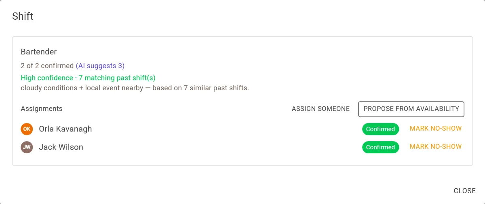
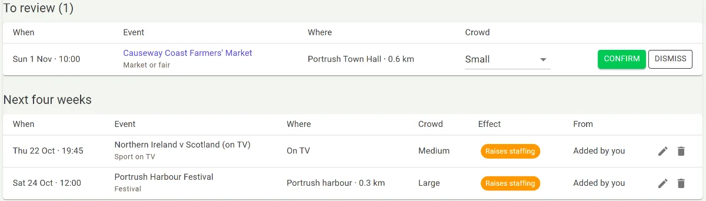
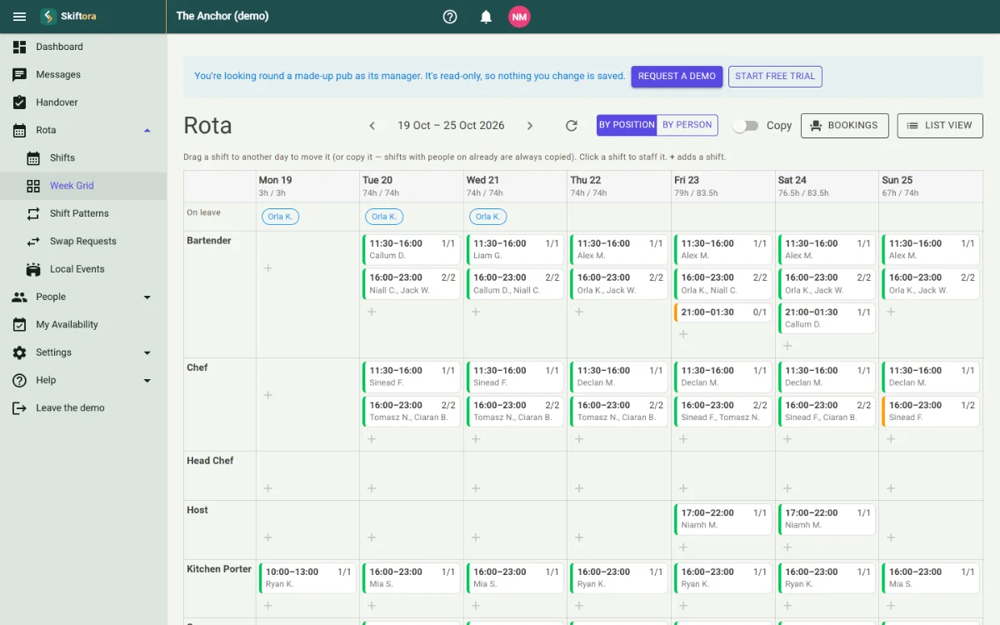
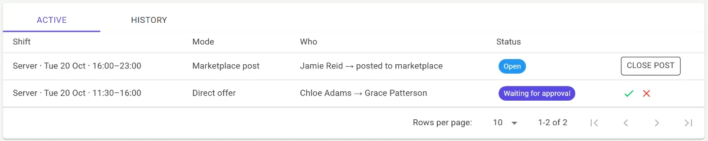

Staff scheduling for independent hospitality
Rotas that see the busy night coming.
Every manager remembers the Saturday that caught them out: the sun came out, the match went to extra time, and half the town turned up. Skiftora reads the same signs you would, the weather, local events and your own history, and suggests how many staff each shift needs, with its reasons. You make the call.
- ☀22°C and sunny: terrace likely open
- ♪Concert nearby, finishing at 10pm
- ↺Similar Saturdays were busier than average
Illustrative example, not a real venue.
What goes into a suggestion
Skiftora looks at the things that make a shift busy or quiet, and tells you which ones it used.
Weather
The forecast for each shift, including whether outdoor seating is likely to be in use.
Local events
Concerts, matches and shows nearby. A weekly search finds more, and you confirm which ones matter.
Your history
How busy the same day of the week has been before, from your past shifts or an imported history.
Bookings
Reservations and expected covers you already know about.
You stay in charge. Every suggestion shows its reasoning, and nothing changes on the rota until a manager approves it. When there isn't much history to go on yet, Skiftora says so.


It reads the same signs you would, and writes them down.
A good manager can feel a busy Saturday coming. Skiftora turns the hunch into numbers you can check.
Everything else a rota needs
Week grid
Build the week by drag and drop, with suggestions alongside.
Rest and hours checks
Checks daily and weekly rest and hours limits as you build the rota.
Swaps you approve
Staff offer shifts to each other or to the team; you approve the swap.
Timesheets
Clock-in and clock-out times, exported to CSV for payroll.
Leave and holiday
Requests, approvals and holiday allowances in one place.
Fair shift picks
Candidates for a shift appear without names first, and picking someone by name records why.


Screenshots from the Skiftora demo: a made-up pub with made-up staff. Try it yourself →
Every change on the rota still goes through you.
What Skiftora leaves out
-
A black box
Every suggestion shows its reasons, and how many past shifts it's based on.
-
Changes you didn't make
Nothing on the rota changes until a manager approves it.
-
Favourites by default
Candidates for a shift appear without names first, and picking someone by name records why.
Your rota, your call.
An app your staff will actually open
Staff see their shifts and sort out the day-to-day themselves, so fewer messages land on the manager.
- See upcoming shifts, and clock in and out
- Set regular availability, plus one-off exceptions
- Offer a shift to a colleague, or pick up an open one
- Request leave or report sick
- Team and direct messages
The staff app is on Android. An iPhone app isn't available yet.
Fewer “can anyone cover Saturday?” messages for you.
Become a pilot venue
We're looking for independent restaurants, bars and pubs in Northern Ireland to run Skiftora on their real rotas before launch.
What you get
- Free for the first 3 months
- Then 50% off for the next 6 months
- Setup done alongside you, including importing past shifts
- A real say in what gets built next
What we ask
- Use Skiftora for your real weekly rota
- Tell us when a suggestion was right, and when it wasn't
- A short check-in every few weeks
Tell us your venue, roughly how many staff you have, and how you do your rota today. Want to look first? Try the demo: a made-up pub, no sign-up needed. Or request a demo and we'll show you round.